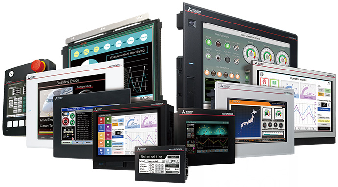

Network-related products |
Programmable Controllers MELSEC
CC-Link IE Field Basic Line Up

Human-Machine Interfaces (HMIs)
CC-Link IE Field Network Basic compatible GOT (HMI)
HMI GOT2000 Series
- Cyclic communication is possible with CC-Link IE Field Network Basic compatible devices via Ethernet interface of GOT (HMI)
- TCP/IP communications are supported, enabling a highly-flexible system

| Type*1 | Screen size | Panel color | Power supply | Multi-touch gesture functions |
|---|---|---|---|---|
| GT27 | ||||
| GT2715-XTB□ | 15″XGA | Black | 100…240 V AC/24 V DC | ● |
| GT2712-ST□□ | 12.1″SVGA | Black/white | 100…240 V AC/24 V DC | ● |
| GT2710-STB□ | 10.4″SVGA | Black | 100…240 V AC/24 V DC | ● |
| GT2710-VT□□ | 10.4″VGA | Black/white | 100…240 V AC/24 V DC | ● |
| GT2708-STB□ | 8.4″SVGA | Black | 100…240 V AC/24 V DC | ● |
| GT2708-VTB□ | 8.4″VGA | Black | 100…240 V AC/24 V DC | ● |
| GT2705-VTBD | 5.7″VGA | Black | 24 V DC | ● |
| GT25 | ||||
| GT2512-STB□ | 12.1″SVGA | Black | 100…240 V AC/24 V DC | - |
| GT2512F-STN□ | 12.1″SVGA | - | 100…240 V AC/24 V DC | - |
| GT2510-VT□□ | 10.4″VGA | Black/white | 100…240 V AC/24 V DC | - |
| GT2510F-VTN□ | 10.4″VGA | - | 100…240 V AC/24 V DC | - |
| GT2508-VT□□ | 8.4″VGA | Black/white | 100…240 V AC/24 V DC | - |
| GT2508F-VTN□ | 8.4″VGA | - | 24 V DC | - |
| GT2505-VTBD | 5.7″VGA | Black | 24 V DC | - |
| GT2512-WXT□D | 12.1″WXGA | Black/silver*2 | 24 V DC | - |
| GT2510-WXT□D | 10.1″WXGA | Black/silver*2 | 24 V DC | - |
| GT2507-WT□D | 7″WVGA | Black/silver*2 | 24 V DC | - |
| GT2507T-WTSD | 7″WVGA | Silver | 24 V DC | - |
| GT2506HS-VTBD | 6.5″VGA | Black | 24 V DC | - |
| GT2505HS-VTBD | 5.7″VGA | Black | 24 V DC | - |
| GT21 | ||||
| GT2107-WT□D | 7″WVGA | Black/silver*2 | 24 V DC | - |
| GT2104-RTBD | 4.3″ [480 × 272 dots] | Black | 24 V DC | - |
| GT2104-PMBD | 4.5″ [384 × 128 dots] | Black | 24 V DC | - |
| GT2103-PMBD | 3.8″ [320 × 128 dots] | Black | 24 V DC | - |
- *1.For further details about model name, please refer to the “GOT 2000 Series consolidated catalog (L(NA)08270ENG)”.
- *2.The bottom part of the panel including the USB environmental protection cover is black.